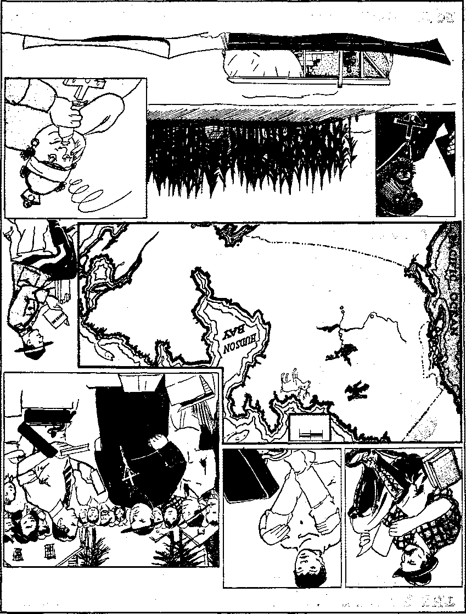

1938
Consolation
Magazine
Contents
Up Toward the Top of the World ' 3
Making Connecticut Safe for Religion
The Tragedy of Germany (Part 2)
Sound Car and Printery at Berne
New Subscribers Should Visit Seattle
Why All the Spaghetti Pressure
By Trail and Stream and
Palisades—Cover Design
Published every other Wednesday by
THE GOLDEN AGE PUBLISHING COMPANY, INC. 117 Adams St., Brooklyn, N. X., U. S. A.
President Clayton J. Woodworth
Vice-President Nathan H. Knorr
Secretary and Treasurer Charles E. Wagner
Five Cents a Copy
|1 a year in the United States J 1.25 to Canada and all other countries
NOTICE TO SUBSCRIBERS
Remittances: For your own safety, remit by postal or express money order. When coin or currency ia lost in the ordinary malls, there is no redress. Remittances from countries other than those named below may be made to the Brooklyn office, but only by International postal money order.
Receipt of a new or renewal subscription will be acknowledged only when requested. Notice of Expiration is sent <with the Journal one month before subscription expires. Please renew promptly to avoid loss of copies. Send change of address direct to us rather than to the jurat office. Tour request should reach us at least two weeks before the date of issue with which It is to take effect. Send your old as well as the new address. Copies will not be forwarded by the post office to your new address unless extra postage is provided by you.
Published also in Bohemian, Danish, Dutch, Finnish, French, German, Greek. Japanese, Norwegian, Polish, Portuguese, Spanish, Swedish, Hungarian, Ukrainian.
OFFICES FOR OTHER COUNTRIES
England 34 Craven Terrace, Dondon, W. 2
Canada 40 Irwin Avenue, Toronto ,5, Ontario Australia 7 Beresford Road, Strathfield, N.S.W. South Africa 623 Boston House, Capo Town
Entered as second-class matter at Brooklyn, N. T., under the Act of March 3, 1873.
DO YOU want a laugh? Take this one. At the Cathedral of St. John HBheAn the Baptist, Savannah, Ga., the “Reverend Father” Joseph W. MBSmI Kavanaugh, speaking on “The Catholic Church and the Bible”, said:
It was members of the Catholic Church that wrote the books of the Mew Testament.
After a little bit (trying it out on the bead counters and “Purgatory” purchasers) the Racketeers will cautiously include Daniel, Isaiah, David, Job, Moses and Noah among the . Roman Catholics, and a little later it will be explained that Adam was really a Roman Catholic, and that where he actually made his slip, if any, was that he had not been to mass the morning he ate the forbidden fruit. Anyway, the Roman Catholic theologians have Adam landed in heaven all O.K., and how could he have possibly been welcomed there if he were not of the august institution which conquers babies in "Ethiopia and Spain?
“Will You Walk into My Parlor?” ♦ “ ‘Will you walk into my parlor?’ said the spider to the fly.” Bishop John A. Duffy, of Buffalo, N. Y., spokesman for the great heresy that provides most of the criminals in the United States, and practically all its I gangsters, is much concerned about America’s lack of religious education. He says, and one can see the crocodile tears flowing down inside his upside-back-aetion-foremost collar, when he says it:
No one regrets the absence of religious instruction among Protestants more than the Catholics,
The bishop seems to think some changes would be necessary in the textbooks. Har! har! And, it may be added, after the changes were in use long enough the people wouldn’t need any textbooks at all; for nobody would be able to read. The Protestants fell for the bishop’s hook in fine shape. They might as well. They won’t listen, but it’s fun to tell ’em.
♦ Dorrie went to dinner with Carlo, the wrestler, and afterwards explained that she never was so embarrassed in her life; when he started to eat his soup five couples got up and danced,
CONSOLATION
“And in His name shall the nations hope.”—Matthew 12:21, A.R.V.
Volume XIX
Brooklyn, N, Y., Wednesday, May 18, 1938
Number 487
Up Toward the Top of the World
THE Northwest Territories are that portion of Canada north Of the province of Alberta and between Yukon Territory and Hudson Bay. My partner and I left
Peace River town on May 13, 1937, with a 26-foot boat and about 3,000 pounds of equipment and literature to cover this territory.
We covered the front part of the boat with a waterproof deck and had the rest of the boat covered with a roof also waterproofed, and the sides were provided with curtains for use in case of rain. We towed a canoe to be used for side trips, and we used a three-horsepower Johnson motor, which we could use witli either the canoe or the twat. We had to carry two barrels of gas, over 1,200 pounds of foodstuffs, sleeping bags, camp stove and other equipment, and, last, but not least, 34 cartons of Kingdom literature.
The population of the Northwest Territories is 1,000 whites and 8,000 Indians and Eskimos. The settlements are. usually from 75 to 200 miles apart and would vary from 100 or less up to about 200 or 300 in population. There are usually three or four priests in the larger settlements, and two or three times as many nuns. (See map on page 5.)
Peace River town is about 350 miles northwest of Edmonton, Alberta. The route from Peace River town follows the* Peace river to Fort Vermilion settlement and the chutes and rapids near Red Rivet Post, and the Peace river runs into the Slave river, which we followed to Fort Fitzgerald. A 16-mile portage around the rapids took us to Fort Smith, and we continued our journey on the Slave river to Great Slave lake and Fort Resolution, almost 1,000 miles from our starting point.
We made a number of calls on trappers all the way up to Fort Smith. They lived along the banks of the river and were certainly glad to see and talk with someone. Their neighbors may live 25 or 50 miles away, and so visits are not very frequent. We placed a lot of books with the trappers, as they had plenty of time to read.
We had witnessed in the settlement of Fort Vermilion before in the wintertime with a team and sleigh. It is a return trip of about 500 miles, and we slept out in forty below zero to do it. We now found quite a few Jonadabs, who were anxious to talk to their neighbors and to help us to spread the message. We put on some lectures, but some of the people were in fear of their preacher or priest and did not show up.
“Father D” (De Mann), at Fort Vermilion, said we should be shot because wre were against, war. My partner, who witnessed to him, said,' “Do we do any wrong?” “No!” he said, “but the government will likely shoot you if you are. against war when it breaks out. ’ *
“Well, we would rather be shot than to murder anyone else,” was the reply.
The four miles’ portage at Fort Vermilion chutes and rapids cost us $25. We had only about $5 change each when we left Peace River, but we placed enough literature to get by. We lost our canoe during a bad blow on the river, but recovered it when it drifted with the wind in to shore. At Fitzgerald we had a couple of meetings with a small audience. The mother superior at Fort Smith ordered me out of the convent, where I had offered one of the nuns a French booklet, if she would read it, but she tore it to pieces. We played some lectures in the sleeping quarters of some of the workmen, and in the caffe. The 16-mile portage by truck cost us $19, and we had expected it to be two or three times that much.
There was only one sawmill and a few workmen between Fort Smith and Resolution, a distance of 200 miles. The Slave river is wide at places, and the wind gets a sweep at it, causing three- or four-foot waves, a$d once a sudden wind caught us on the wrong side of the river and we had to cross to get shelter. Our hearts were in our mouths when our motor sputtered, because of dirt in the gas, and we had visions of being swamped or drowned or stranded. We made it to the shelter of an island and had to wait two days for the wind to abate.
We towed two prospectors, who had motor trouble, into Resolution, and got there at twelve o’clock at night. We were met on the wharf by about thirty Indians or half-breeds. They inquired if we had seen a boat with two persons in it. Some of the Indians looked at us so strangely, and were in awe, as though we were the first whites they had seen. We asked' them if they were looking for somebody they knew. They looked at one another, smiled, and said nothing. We heard through various sources that the priests had told the Indians that we were the agents of the Devil; as usual, trying to blame us for their owm crimes. '
The following day we found that the Indians had been on strike for two weeks, that is, they refused to accept the treaty money of $5 per person, which is paid in spring to every family to keep the Indians from causing trouble, as they did in the Riel Rebellion, so they will be on good terms with their white exploiters.
The Indians objected to the Catholic doctor, who was also the Indian Agent' and was brought in through the influence of the Roman Catholic bishop. A number of people were given the wrong medicine or told by this doctor they were not sick, and some of them died before they could get to the hospital for treatment. He was said to be haughty and thought himself so much better than the Indians and would not properly consider their complaints.
Bill, my partner, said he was glad the Indians had gone on strike before we got there, rather than after we were there, as otherwise they would try to throw on us the blame for stirring up this trouble. I said, "They will be doing that anyway ’5; and subsequent events proved that to be the case. We covered the settlement, and we were selling our extra grub and boat and motor in order to get out and go to the Columbus convention of Jehovah’s Witnesses, which we heard about at this post, which was the far end of our trip.
We had only a flat-bottomed river boat, and it wrould never have been able to stand the rough weather on Great Slave lake. It would have been suicide to cross, and the Society had advised us to avoid unnecessary risks. So we made arrangements with the captains and pursers of different boats to take some literature in to all the posts we could not call on farther north, and this they were instructed to leave with some open-minded trader to distribute to those who wrould read. They, promised to do this favor for us.
We witnessed to one priest at Resolution, "Father” Mowka, and he charged us with being Communist and Judge Rutherford with being a Jew. I asked him why he made such false charges, and if he would not like to discuss Catholicism versus the Bible truths on the public platform, but he refused to do so.
A few days later one of the Mounted Police showed up and asked who was in charge of our work. We witnessed to him and explained the nature of our -work. He said he had received a complaint and that the Indian Agent, Dr. Amyot, claimed the Indians did not like to have another religion around, and they wanted us put out of the settlement. .
The mountie told him we had as much right there as the Catholic Church; but he promised to talk to us. He was very friendly and said that at one time the Roman Catholic church had such a monopoly within the Northwest Territories that no other church could be established for a number of years after they built a church in a settlement. It was evident that it was the Roman Catholic church that objected to our presence and was using the Indian Agent as a willing tool.
Some of the priests were under the impression that our work was stopped in Alberta. Aberhardt’s law to gag the press and license everything was, no doubt, aimed at Jehovah’s witnesses, as he is strongly opposed to our work and favors the Catholics. The priests boasted that we* (Jehovah’s witnesses) would soon all be in jail. The strike was settled when the Mounted Police sergeant had been wired by Ottawa to take over the papers and funds from Dr. Amyot, and after a delay Dr. Amyot was fired and did turn this over.
At Chipewyan a dozen people showed up for the meeting. I handed the testimony card to the priest and started a discussion, and we had an audience of 65 for the records which we played. The priest admitted that he believed war was justifiable, that he did not accept the Bible alone, but the Bible and tra-
eset 'ei avw
£
dition must be taken together. He tried to disperse the meeting, but only half a dozen left, and I played a few more records, answered questions, and placed some literature.
We expected to leave on the following day for the other settlement; but we stayed there until the next evening, because of windy weather. People came to bur tent and asked us to their homes. We said we wished we had advertised a meeting, and three or four volunteers said they would tell their neighbors, and in about twenty minutes or so we had about 25 people in a friendly man’s home.
At Goldfields the priest charged us with responsibility for the trouble at Resolution. I showed him a newspaper clipping in which the trouble was blamed on “the alleged harshness of the Indian Agent, etc. ’ and that made him admit he didn't know what he was talking about. He also said that we had been reported to the minister of justice at Ottawa because Jehovah's witnesses always called around when the husbands were not at home. I remember only one case in that vicinity, where a trader’s wife took some French books when her husband was away.
The priest made these insinuations although he did not dare say we had done any wrong, as he knew it was false. I mentioned a case where a priest at Fort Vermilion, Alberta, had gotten a married woman into trouble and it was said he was mentally unbalanced and he was not allowed to say masses for about a year. I told him that priests had incited mobs against us. He denied this and said the church taught charity and would punish a priest who did wrong. I mentioned the place, Donnelly, Alberta, where it had happened and nothing was done to punish this priest.
These are the earmarks of the Roman Catholic Hierarchy, to blame someone else for trouble for which they are responsible. Why do the priests not lay aside their weapons of slander and false reports and face the sword of truth? They cannot face so sharp a weapon when hiding behind a refuge of lies and their whole structure is built on fraud and deceit.
We are exceedingly thankful for the privilege we had of giving a little witness to the honor of the supreme Creator, and we would gladly attempt to go beyond Great Slave lake if we can manage to get a lake boat and it is considered advisable to do so. We placed over 4,000 pieces of literature, including 200 of The Golden Age [now Consolation]. We hope to take a larger supply of Consolation on the next trip.
The last place we witnessed to on our way out was McMurray, Alberta, on August 10. This point and Waterways were the towns farthest south on the water route we followed out. Instead of returning via the Peace river we went to Chipewyan via the Booher river to Lake Athabaska. The Goldfields settlement is on the north side of Lake, Athabaska. Then we went up the Athabaska river to McMurray and Waterways, which are at the end of the steel, 300 miles northeast of Edmonton. We traveled 1,000 miles by water, 150 by rail/ hitchhiked 1,000 miles, and went 1,850 miles by car, to get to the Columbus convention.
And here is an interesting item in closing. Mrs. Mary O’Coffey obtained literature, which I told her was against war and that the time was near when war would be no more. She was not hostile. I then met “Father” Chouinard, the Roman Catholic priest of this settlement of McMurray. He claimed that the priests never urged violence, but admitted that he didn’t blame Catholics if they hurt us, as that showed their seal for their religion. A girl called my partner into Hotel Franklin and said Mrs. O’Coffey wanted more books. My partner found “Father” Chouinard present. Mrs. O’Coffey claimed I had told her the books would stop war, and proceeded io bawl my partner out, using abusive language. “Father” Chouinard laughed as she took a stick and hit my partner across the back as she ordered him out. The priest no doubt enjoys such a manifestation of religious zeal —Catholic Action; but the Lord shall have them in derision.—A Canadian Pioneer.
♦ The Quebec padlock law enables the attorney general, without a trial of any sort, to padlock any man’s house or place of business. The pretense is that the law was necessary to blot out Communism. When some of the legislators of Quebec wanted a definition of “Communism”, Premier Duplessis, who is also attorney general of Quebec, remarked that no definition is necessary, as he can smell either Communism or Bolshevism. That is it; that is it. Quebec now has legislation by odor, or smell, or stench, and the stench comes all the way from Vatican City to the nostrils of the poor tool and poor fool that will do the legal smelling. Fascism (Catholic Action) stinks.
NOW the battle line shifts to the State of Connecticut. In this Lilliputian state, where, many years ago, valiant battles in the interests of freedom of conscience were-waged, the Hierarchy and its allies are making new efforts to censor and interdict the truth. Stung by the sharp, cutting truths in the books Enemies and Cure, they have swung into action with new and improved methods of attack, designed to keep the racket safe. And in so doing the priestly crew' has opened the door for an investigation of its dogmas and creeds which will bring much joy and glee to Jehovah’s witnesses and all people of good will.
The Catholic Hierarchy has been challenged to debate the merits of its position, with Judge Rutherford. Two million six hundred thirty thousand people strongly urged the organization to select its ablest and fight the matter out on the public platform. But the priests refused to face the music. They were afraid and resorted to vilification, abuse, boycott, and strong-arm methods in place thereof. Now, While desperately fighting to clamp a gag on the State of Connecticut they have unwittingly placed themselves on the front line of attack and must face the charges which they feared and hitherto avoided.
Connecticut has a number of legislative enactments which arc being used in this new method of preserving religion from attack. Section 6194 of Connecticut Statutes provides as follows:
Any person who shall . . . publicly exhibit, post up or advertise any offensive, indecent or abusive matter concerning any person shall be fined not more than five hundred dollars or imprisoned in jail not more than one year or both.
Section 6066 of the same law book provides that any person who provides by his advertisement to “ ridicule or hold up to contempt any person, or class of persons, on account of creed, religion, color, denomination, nationality or race . .. shall be fined not more than fifty dollars or be imprisoned not more than thirty days or both”. Another section provides that any person who shall have in his possession with intent to sell, lend, give, or show any book or printed matter containing “obscene, indecent or impure language” may be jailed for not more than two years and fined not
MAY 18, 1838
more than one thousand dollars. Additionally, it has a law requiring a license to solicit any money or donations for any philanthropic, religious or charitable cause, and also has the usual laws licensing peddlers and canvassers. All of these types of legislation have been used in the present campaign against Jehovah’s witnesses. The one employed most by the inquisitors is Section 6194 above quoted.
The city of Bristol began the ceremonies. James P. Jennings, member of the City Council, and ardent Catholic, in collaboration with Esmonde J. Phelan, Grand Knight of the Knights of Columbus, raised a big howl over the book Enemies. Jennings described it as a scurrilous attack on the Catholic church, and demanded its suppressioh. Mayor Joseph W. Harding promptly decreed that “an attack on religion shall not be tolerated in Bristol”. Immediately thereafter the officials began a vicious attack on Christians and Christianity in Bristol. Sixty-seven of Jehovah’s witnesses were jailed at one session and charged with distributing “abusive and offensive literature”. Sixty-six were convicted in spite of an amazing absence of evidence concerning the charge.
NewJ Britain followed suit with a raid which netted 47 arrests and 47 convictions. It went over in good Hoboken style. To be one of Jehovah’s witnesses and have in possession printed matter was sufficient to bring a $25 fine. Thomas P. Lawler, pastor of St. Mary’s Catholic church of New Britain, joined in the attack on Christianity by condemning the Enemies book as obscene, and recommending the imprisonment of those who would circulate it. Lawler says he believes in religious freedom, but it doesn’t include any right to expose the Hierarchy doings. This outburst by Lawler was answered by Jehovah’s witnesses in a pamphlet entitled “Shall the Priests Rule Connecticut?” Ten thousand copies were distributed in Bristol and New Britain, and it was the contents of the pamphlet that caused Judge O’Connell, of Bristol, and Judge Hagerty, of New Britain, to impose heavy fines on 113 defendants.
At Bridgeport, John J. McCarthy, who is chief exponent of the “purgatory” layout in the so-called “Church of the Blessed Sacrament”, personally took charge of the arrest
7 of Robert L. Dawson, pioneer. Dawson had “offended” him by offering him a chance to learn something about the Bible. The charge was, 'Distributing abusive and offensive literature,’ the offensiveness consisting of the following statement from page 193 of Enemies:
It must now he apparent^ to all honest people of earth who have any knowledge, that the Roman Catholic organization is a religious political organization, indulging in a selfish work, which blasphemes the name of Almighty God, falsely and fraudulently represents him, carries on a racket in the name of Christ, and is the great enemy of God and of the people.
Twenty-five dollars ’ fine plus ten days in jail was the reward meted out by the Bridgeport police court for thus telling the truth about the Catholic organization.
Plainville, Connecticut, it would seem, ex-ceedeth even the iniquity of Hudson County in its portion of the onslaught. Five Christians were arrested and charged with distribution of obscene and immoral literature. One ease was tried. No evidence was produced of anything remotely resembling that which is immoral or obscene. Nevertheless the defendant was 'found guilty’. The other cases were not tried. No evidence was produced as to them; nevertheless the court found each of them “guilty” and assessed penalties against them.
In Connecticut and a number of other states - Jehovah’s witnesses recently mailed copies of the Supreme Court decision in Lovell v. Griffin to public officials. Louis Garloni, Divisional servant in Connecticut, mailed copies of the decision to the police, magistrates and mayor of Hartford. The accompanying letter, among other things, referred to the widespread persecution of Jehovah’s witnesses during the past ten years, and said:
Most of such persecution has been instigated and promoted by religionists, largely Catholic priests and the principal of their flocks. Tho persecutors have used the police and the courts as their cat’s-paws, in a vain attempt to censor and prohibit and hinder dissemination of Bible truths which shock their religious susceptibilities.
Consolation readers can all testify this statement to be absolutely true. Nevertheless it offended the majesty of the police of Hartford. Garloni was arrested, and on trial was ‘ found guilty’ and fined $25 and costs. Thus doth freedom go with the wind in Hartford.
New Haven authorities watched the proces-
sion for some time and then joined with a new charge, that of holding up to ridicule certain persons on account of their religion. Four were arrested and received the customary punishment. _ "
Many of the readers of Consolation have read Enemies. They know it to be a book of Biblical explanation containing a message of comfort and hope to man. Yes, it is offensive to Catholic prelates who fatten on the credulity of the people. It is offensive to them in the same sense that the remarks of Jesus concerning hypocrites were offensive to the scribes and Pharisees of His day. Many are amazed to think that in New England, where the battle of religious freedom was fought so strenuously years ago, Christian people can be jailed for bringing to people the message of the Bible. Here is another point of interest to the man who believes in liberty and equality under the law. While Jehovah’s witnesses were being jailed in mass allotments The Catholic Transcript, a periodical published by the Diocese of Hartford, came to bat with the following editorial:
KVTHEKFORD JEHOVAH ,
Father Felix, director of “Defenders of the Faith”, has done some splendid work against America’s ace bigot, “Judge” Rutherford, says the New World. Everyone knows the infamous practices of Rutherford and his marauding band of Jehovah’s witnesses. All through the United States, we can see and hear these apostles of hate hawking their anti-Catholic literature. All in, all the movement has an army of 35,000 people, some paid, others just the familiar garden variety of bigot, who think everything Catholic is diabolic. There are about 5000 so-called pioneers who man the mechanical end of the program, such as public address systems on motor cars and various phonograph records which blast forth foul vilifications against the Chureh-The number of these men and women compose a real petty persecution of our Faith in the campaign they so viciously conduct. The type of propaganda they hand out reeks with foul denunciations and falsehoods. For instance one cartoon shows a Bishop standing beside a placard .advertising indulgences. It reads: “Bargains Today. Murder $10.00. Arson $100.00. Masses: Flat Rate $25.00, Special $50,00.” Another outrage from the Golden Age is a hideous looking figure dressed as a prelate supervising an inquisition machine which pulls human beings in one funnel and has money tumbling out of a spout beneath. Across it is written : “Crank is Turned Around the World”, Other cartoons are too obnoxious to describe. In fact the MENACE in its worst days is Alice in Wonderland compared to the filthy ramifications of Rutherford’s literature. Glancing over the slanders in his propaganda, one would say that no sane man could believe sueh libel in these enlightened days. Still the Witnesses disposed of 24,000,000 of Rutherford’s hooks and booklets last year. Evidently thousands of them were read and in many cases believed. Not only that, at least a hundred radio stations have carried the “Judge” defamations over the air, demonstrating that there is real financial backing in his business of malice and hate.
The Catholic Transcript is widely circulated in this state where offensive and abusive language is prohibited by law. But no one appears to have been jailed because of its distribution. The editorial staff of Consolation does not claim to have deep and profound knowledge of what constitutes that which is offensive and abusive, but feels that the describing of Jehovah’s witnesses as “apostles of hate” and a “marauding band” might have a slight tendency in that direction. It would seem that the phrase “the filthy ramifications of Rutherford’s literature” would lean somewhat toward that which is offensive. Consolation comments cautiously so as to avoid offending or abusing the Diocese of Hartford, which publishes the putrid and pusillanimous diatribe.
Two hundred arrests within a period of two months is quite a record for a beginner in the gentle art of restricting the activities of Jehovah’s witnesses. It bespeaks pretty good cooperation among the members of the religious aid society. Convictions are almost unanimous, but at this writing not one of Jehovah’s witnesses is behind the bars in Connecticut. Appeals have been taken in all cases. Whether the State of Connecticut will remain true to the traditions of its early fathers will depend largely on the attitude of the upper courts in these cases.
♦ In the new Fascist state, Brazil, are extremes of poverty and wealth. In the interior are whole tribes that have nothing. In the big cities the professional men are rolling in wealth, and so addicted to jewelry that doctors uniformly wear emeralds, lawyers wear rubies, engineers wear sapphires, teachers wear tourmaline, dentists wear topaz, and commercial travelers wear pink tourmaline. Brazil is nearly as large as the whole of Europe.
Jehovah's Kingdom publishers' Brazilian branch, Sao Paulo, Brazil
MAY 18, 1938
9
The Tragedy of Germany (In Two Parts — Part 2)
VARIOUS American concerns that recently bought or made guns, bombs or shillalahs of various kinds for beating up employees and labor organizers, will be interested to know that the great Leuna chemical works, in Germany, now has its own work prison. This idea is bound to take. It is much more dignified to arrest a man in a lawful manner and then lock him up and heat him to a pulp than it is to first unlawfully beat him to a pulp and then have him locked up. It looks better in the newspapers and sounds better over the radio.
The German General Staff is said to have warned Hitler that Germany has fewer war materials now than it had in 1918 and that all stores are insufficient to fight more than four months in a major war. Moreover, that the barracks are full of puppy politicians, not soldiers, but spies, snoopers, and would-be leaders that it would take many months of hard work to transform into militarily disciplined men. Yet all this may be only a ruse.
THE chief end of German children is to glorify Hitler (and Germany), This means that they must be ready t0 serve as cannon fodder whenever their "beloved Fuehrer” shall decide they must do so, whether it be fighting for Germany or for the Spanish rebels or for the pope himself. Government employees in Pomerania last year were ordered to get married by a set date or lose their jobs. Some German papers deplored the fact that 30,000 priests were living unproductive and more or less celibate lives, as well as twice that many regular nuns. It was thought they could help a little more. German mothers were warned not to smoke until past fifty; otherwise they could not hope to bear suitable cannon fodder. Those were not the exact words, but that was the idea.
The Nazi government has ordered doctors that deformed or abnormal babies are not to be allowed to live. The German Health Ministry is reported to have issued a confidential memorandum to practicing doctors stating, "As a medical man, you will know how to prevent the child’s having life, and what to explain to the mother.” A Steinmetz would now have little show of being born in Germany.
10
Every German couple is given a copy of Meili Kampf, Hitler’s book, and is expected to produce new soldiers according to the plans and purposes therein revealed. In the German edition of that book occur the following statements, carefully eliminated from the English edition:
The war of 1914 was de si red by the whole German nation. I am not ashamed to say that, carried away by violent enthusiasm, I fell on my knees and thanked heaven with all my heart that it had given me the happiness of living at such a time. Let him who wants to live, fight. The man who refuses to fight in this world, where it is ordained that there must be ceaseless struggle, does not deserve to live.
Ah, but “in ins days shall the righteous flourish; and abundance of peace so long as the moon endureth”. (Psalm 72:7) "Neither shall they learn war any more.”—Isaiah 2; 4.
Every lesson in the schools begins and ends with a "Heil Hitler”, the pupils standing at attention while giving the salute. This is nothing less than creature-worship, and would be unwarranted even if Hitler were a model.
Meanwhile children are being taught to hate the one true God, Jehovah. In a new handbook by Fritz Fink, Nuremberg school counselor, placed in the hands of Berlin teachers at the beginning of the 1937 school year, the pupils are told that Jehovah is unjust and ferocious and shows affection only for the worst and most degraded of all races, the Jews.
The morals of the Nazi youth are indicated by the fact that at the lying-in home in Urban Place, Berlin, from January to April, 1937, 128 mothers, not yet 18 years of age, were delivered. Sixteen of these were orphans in servants’ position. In many instances the fathers were Hitler youths under 17 years of age. These youths, as soon as they get into Nazi uniforms, feel that they are henceforth not responsible to any except Hitler, who appears to be indulgent in matters of that kind.
The discipline of Nazi youth is one of the most formidable things of that formidable land. On the Czech border, once a year, there, are two terrible weeks for youth in which they' are called "The Living Fortification” and day and night live with their watches in their hands. Children come back in a state of com-
consolation plete collapse. Saturdays and Sundays are awful days all over Germany. Saturday night is always spent in camp, and the Sunday marches of fifteen miles must be completed in 3 hours 10 minutes. This at the rate of a mile in 12 minutes 40 seconds. A grown man, using his full strength, needs 15 minutes to walk one mile. These poor German children are raced a distance of fifteen miles. At the end many drop from exhaustion, and all are completely useless at school the following Monday.
All German girls between 18 and 21 are compelled to join an organization known as “Work, Beauty and Faith”, whei'e they will participate in rhythmic and other exercises calculated to improve their bearing and looks.
Five years ago there were 3,000 students in Hamburg university; now there are 1,200. Similar declensions have taken place all over Germany. The liberal professors were pensioned as not fit to teach Nazi youth; the remaining ones lecture to empty classrooms. In every German university there is a real shortage of university professors, even in such subjects as mathematics and foreign languages. The standards of students have fallen so low that real scholarship is at a discount. Not infrequently students call on their professors just before examinations and tell them what marks they desire, and if the students are Nazis the professors dare not refuse their requests, ,
Before any male student may be admitted to a university he must serve at least six months in the labor service, and before any girl may enter she must have been employed twenty-six weeks in the Women’s Labor Service or some similar organization, German girls who do not attend university or work in offices or textile or tobacco industries must learn housekeeping by actual experience, usually by a year’s service in private households to which they may be assigned, and most often in large households where the overburdened housewife is unable to hire help. The work may be done in the homes of relatives. The State helps pay the wages, ■
In 1933 there were 6,641 students of theology in Germany; the number is now reduced to 4,112, or 62 percent of what it was only four years ago. Interesting comment on this is found in the 13th chapter of Zechariah’s
MAY 18,1038
prophecy; also in the book Preparation, published by the Watch Tower.
One after another all traces of opposition to the Nazi rule of Germany disappear. Students of history will be interested to know that among the Protestant institutions closed is the seminary at Wittenberg where Luther and Melanehthon were professors at the time of the Reformation.
Future Nazi rulers will be selected, like Catholic priests, from all classed of German boys, and will be trained for seventeen years: six years in Adolf Hitler schools until the boys are 18 years of age, then seven years learning a trade or profession, and, finally, four years in a Nazi castle, learning Nazi cussedness. At first, 4,000 will be chosen, their sifting to continue for the seventeen years.
At fifteen of the German leader schools, the “grace” said before meals by these future scourges of society is as follows:
He who wishes to live must fight. He who does not want to fight does not deserve to live. Heil Hitler!
Students from abroad are complaining that there is a steady degeneration of university faculties in Germany. The number of students has been reduced by fifty percent in the last four years. No teaching candidates are available. Even the Nazis themselves state that at least one-third of the universities must be closed. Thus the absolute destruction of the German Reformation is under way, and the complete triumph of the Hierarchy’s ideas is in sight.
The following story is an example of antiNazi wit circulated in Germany at the risk of the tellers:
God, in creating Germans, endowed them with three qualities: intelligence, honesty, and Nazism. But God in His wisdom imposed one restriction: A German could possess only two of these three qualities. In other words, if a German is a Nazi and honest, he cannot be intelligent; if he is a Nazi and intelligent, he cannot be honest; and if he is honest and intelligent, he cannot be a Nazi. —Mag azine Digest.
The attitude of Americans toward Nazism is well expressed in the following letter to the Baltimore Evening Sun:
Hitler doesn’t like the newsreel “Inside Nazi Germany”. I wonder why. Surely he has nothing to hide from the camera lens. Why, land of Goshen, he should be a mighty heap proud of his little kingdom! Just look at what he’s done.
He purged the schools, he purged the churches, he purged the men, he purged fire women, he purged
11
the children, he purged the servants, he purged the cattle, he purged the industries, lie purged the farmers, he purged the army, he purged the navy, he purged the press, he purged the books, he purged the music, he purged the nursery rhymes, he purged the Bible, he purged the weather, and he even purged the pretty little flowers that grow in the springtime. Now, that ain’t doin’ so bad, is it?
Incidentally, butter today in Germany is so scarce it has to he smuggled to the supper table, otherwise another head rolls off the block.—George LeBoft
German travelers abroad must Y: . furnish the German government Iw with names of relatives they will visit, degree of relation, .when and where such relatives have visited Germany, their political attitude, whether such relatives extended a written invitation [which invitation must be submitted], the exact time and train on which the traveler will leave Germany, the station at which he will leave there, the stations he will pass, when he will reach his destination, and the exact date and time of his return. He is instructed that while abroad he must not wear any uniform or foreign badge; on his arrival at his destination he must at once report to the Nazi representative or the German consulate, and when he returns to Germany he must submit a complete account of his impressions, must say whether he was molested, and tell what he saw and heard. It will thus be seen that the German traveler has no real liberty at all, but is automatically made into a eheap tattler and spy.
Few Germans may travel. Budapest, Hungary, is but a short distance away, and the Catholic organization had expected 25,000 Germans to attend the Eucharistic Congress to be held there, but Hitler has decided that they must stay at home, because the necessary foreign exchange is not available.
A government dictated by men such as Hitler and his accomplices is not to be trusted by other governments. This point is illustrated in the fact that the Nazi government sent seventy spies into Britain under the guise of newspapermen. But it didn’t work as well as expected. The work done was too well done. The lines connecting every German servant girl with the Nazi government were made too plain. The Devil’s tricks, so marvelously5, perfected in the Papal scheme of things, and so feebly copied by would-be dictator-gods, do not work quite as effectively as formerly. The time for the complete collapse and destruction of all forms of oppression is at hand. The higher men have exalted themselves, the more ignominious will be their undoing.
How the Nazis do love to “boss”! They are now instructing Germans all over the world what storekeepers they may patronize; they forbid them to retain Jewish lawyers or physicians ; they compel them to register at consulates and report any changes in their addresses or status; they establish clubs at which Germans meet, and provide these clubs with films, newspapers and books of Nazi stripe; they encourage club members to give the Nazi salute and observe Nazi holidays; and they discourage Germans from marrying Jews or even mingling with them. Germans living in New York city were given a list of physicians and lawyers whom the Nazis consider eligible for employment.
A perfect system of inquisition has been inaugurated. The country is divided into blocks, the exact number being 397,040. It may be said that this is nothing new; hut it is new. It is a new political subdivision, each block consisting of 40 to 60 households, and every block warden of the Nazi party must know all about every inhabitant within histblock, who in turn must answer all questions put to him by the Nazi representative. No one, now, is safe from small-minded Nazi busybodies and snoopers.
As in the French Revolution, the guillotines are busy. Desertions from the army are increasing. Everybody who can get out of the nation-wide Nazi prison is glad to go. Universities are drying up; writers are going or gone, or are in concentration camps; Germany is on the toboggan intellectually as well as morally.
An Alsatian, Alphonse Bientz, excused from military service by the French in 1914, because of an injured leg, was shortly afterwards seized by the Germans and made a soldier on the Russian front. There he was almost killed. On recovering he was put to work in a munition factory; was there accused of insubordination, and spent twenty years in German prisons. He just returned to his home town to learn that his mother had recently died, unaware of the fact that he was still alive.
For bringing Hitler into court in 1931, and proving that the Nazi organization was then an illegal organization with terrorism as a part
Jehovah’s Kingdom publishers — One of the sound ears in operation in Sehwarzenbutg, Canton of Berne, Switzerland; and a comer of the printing plant in the factory at Be me.
of its policy, Hans Litten, a German lawyer, was in prison ever after the Reichstag fire. No charge was made against him, yet he was brutally tortured, even having his leg broken. He died a prisoner, virtually murdered by his Nazi jailers. It shows what may happen in any land ruled by a dictator.
At the Dachau concentration eamp the new asphyxiating gases are tried out upon prisoners provided with the latest type of masks. Many have thus been killed, and others seriously poisoned.
Political minorities, 2,600 of them, are in the concentration camp at Dachau, ten miles from Munich. For daring to think differently from the Hitler gang they are beaten, kicked, knocked down in the mud and nettles, lashed to posts, and their faces burned with cigarette stubs. The reason why they gave up tying men with their arms around trees is that after half an hour the men shrieked like tortured animals, This treatment of minorities is the Roman Catholic ideal; their literature is filled with claims that it is just and right; and the gangsters that are doing the torturing at Dachau may confidently call for the “blessing” of the “church” upon their work, if only they will permit the “church” to do all the other things that are upon its program.
A report from Berlin runs:
I have spoken with an executioner. He told me that he and his colleagues had now permanent posts under the Government. Executions took place daily, and for some short time past not only the ax but the guillotine has come into requisition. On a single day in the third week of June last there were four executions in Cologne alone. At the same time heavy sentences of impri univment are passed on persons belonging to the Opposition. Political prisoners, especially those confined in the concentration camps, whom no sentence of a court, but pure arbitrariness, has condemned to that lot, are much more harshly treated than actual criminals. The aim is to destroy them body and soul.
Professor "William E. Dodd, former ambassador to Germany, made the following statement with regard to conditions in that unhappy country:
In a vast region where religious freedoms are denied and where individual initiative and discovery is not allowed, where race hatreds are cultivated daily, what can a representative of the United States dot The logical outcome of the present vast war preparations is another war; and what would another war leave of modem civilization ? The great business and industrial groups defeated world peace efforts at Geneva more than once because they thought the sale of arms and war materials more important than world peace.
The German Gestapo (secret state police) claims the right of protective arrest, prohibition of residence, prohibition of societies, confiscation of property, prohibition of publications, and all means necessary to attain its ends, without interference of German courts or the courts of other countries, and without review except by its own upper authorities.
That by no means all Germans desire this condition of things is made evident by the following extract from Deutschland Berichte:
The fifth year of dictatorship in Germany is drawing to its close. Terrorism continues to rage there. It was no infantile complaint of the new system as the shocked world tried to persuade itself at the outset. It is the very system itself—the skeleton, the framework without which it must inevitably collapse. The wild haphazard terrorism of the early stages has become an organized terrorism, or to put it better, savagery has been organized. It has, however, lost nothing of its terrible character thereby; it has only become more inescapable.
Five years are a long time, and many persons abroad have turned away in resigned fashion from the horrible sight with the excuse: “But We cannot do anything to help.” They make a mistake. Not to turn away, to take the inconvenient course, to put up with the truth, and to seek to learn—this in itself is to help. The German Government is threatening today to revenge itself upon the prisoners in the concentration camps for the disclosures which appear in the foreign press. But it is quite unthinkable what would happen to the prisoners if the Government’s threat attained its aim, if the voice of truth which has been silenced in Germany were to be silent in all the rest of the world, if the wield-ers of violence in Germany had no need to fear the abhorrence and indignation of civilized humanity.
All the leading American book publishers explained in a joint statement why they could not consistently attend the book publishers’ congress at Leipzig, Germany, in 1937. They could not consistently visit any country where the mere possession of certain books constitutes a criminal offense; where no book may be published unless submitted in manuscript to a government official and approved by him; where the works of enlightened modern writers are forbidden; where censorship is not limited to political utterances, but extends to the sciences, the arts and culture in general, and where booksellers and publishers who pursue their avocations as in other countries may be held guilty of treason.
A collection of speeches of President Roosevelt which had been sent from Basle, Switzerland, to Leipzig, the one-time book center of the world, to be placed on sale, were returned to the Swiss border as falling under the head of “undesirable literature”.
As an instance. of its lack of regard for simple truth is the Nazi ruling that no mention should be made in any German “news”-paper of the successful flights from Moscow over the North Pole to California, U. S. A.
The effects of a dictatorship upon the general culture are revealed in the following statement by the Deutschland Berichte of December, 1937:
Not a single poem marked by fine feeling and capable of making profound appeal has issued, from the Brown camp. What the National Socialists claim for themselves of this nature is the work of authors whose lives are rooted in the liberalist epoch that is taboo to the Nazis. “The poets and singers of present-day Germany are as yet lacking,” confessed Hitler at the Nuremberg Kultur-tagung 1937. Even he could not evade this confession, since Goebbels himself had several timCs had to take refuge behind the slogan of “look to the future”. Prose has dried up, since a really dear and realistic description of actual life is sure to come into conflict with the various censorships. A big section of the German readers therefore prefer translations of foreign books, books from former times or memoirs that tell of life as it used to be, and which still carry with them the breath of freedom, of truth and of the atmosphere of a liberal age.
The most tragic effect of dictatorships, particularly of the type instigated by the Roman Catholic Hierarchy, is the coercion of conscience, or the effort to coerce the conscience. The New York Times, November 30,1937, contains a pathetic account of the breaking-up of a family of Jehovah’s witnesses at Walden -berg, Germany, because they put Jehovah God in the highest place, and not ifitler. In taking the children away from their parents and turning them over to the Nazis to be trained and educated the presiding “judge” ruled that:
The law as a racial and national instrument entrusts German parents with the education of the MAY IS, 1»3S children only under certain conditions, namely, that they educate them in the fashion that the nation and State expect.
Here is positive proof, thousands of times repeated in Germany, that the judges in that dreadful land have not the slightest knowledge of God, nor the slightest fear of Him. The Scriptures show the responsibility and right of parents to do for their children just what these faithful Christians in Waldenberg did for their children;
And ye shall teach them [God’s commandments, to] your children, speaking of them when thou sittest in thine house, and when thou walkest by the way, when thou liest down, and when thou risest up.—Deuteronomy 11:19.
Not only do such incidents and the general trend of affairs in Germany show the essential harmony between Hitler and the pope, but palpable evidence of a mutual understanding is furnished in the fact that on his recent visit to Hitler Mussolini acted as the pope’s messenger. He bore a message from the one who is furnishing much of the money and all of the brains to make Fascism (Catholic Action), which is the same as Nazism, look like the inevitable scheme for the control of all the world.
In a column report from Germany sent by wireless to the New York Times there are eight lines that will cause all of Jehovah’s witnesses to draw deep breaths and gird up their loins for what is ahead in Britain and America:
Former Locksmith Adolf Waudres and Commercial Traveler Schloemer were sentenced to five-year imprisonment by a special court in Frankfort for continuing to propagate the doctrine of the Bible Research sect, which is prohibited. The sect is pacifist,
German newspapers contain details of the martyrs of Stettin. “Martyrs” is a Greek word meaning “witnesses”. Helen Kersten, 64 years of age, one year in prison for activity as one of Jehovah’s witnesses; Hans Kersten, 30 years old, a year and nine months in prison; Luise Gottschalk, 52 years, 1 year; her husband, 4 months; her daughter, Ursula, 1 year; two sisters, 58 and 56 years old, 4 months each; one 68 years old, 2| months; one 50 years old, 6 months. In the same column various other persons are reported as receiving terms of 4 to 15 months for cursing
Hitler and other tyrants. In various parts of Berlin 42 of Jehovah’s witnesses were arrested and given prison terms of 4 to 18 months.
All evidence from Germany indicates wholesale arrests and prosecutions of Jehovah’s witnesses, with sentences running up to live years in prison for believing and practicing the teachings of the Scriptures. Betrayals have occurred, and in at least one instance after a supposed brother had betrayed the rest of the company, and had been given his liberty for so doing, he committed suicide by hanging, as did Judas.
The Berlin correspondent of the Manchester Guardian mentions in the most matter-of-fact manner that Jehovah’s witnesses are habitually sent to prison in Germany whenever they are discovered. It is apparent, therefore, that conditions arc similar in Germany now to what they were in Rome in the days of Nero, when Christians were immediately incarcerated as soon as they were known to be such. As in Rome, so in Germany, Christ’s real followers are hated of all men. It is just as the Master foretold.
The emergency court at Dessau, Germany (Can any just person explain why it is necessary to try Jehovah’s witnesses in an emergency court?), having some of Jehovah’s witnesses before them, explained that at first the emergency court had used rather mild methods, fines, prison terms of days, weeks or months, but that now, in order to make the punishments more effective, it had'beeome necessary to impose sentences of several year's. The witnesses for Jehovah had continued to publicly offer literature, and to deliver it, and they had refused the German salute, with the argument that Heil (salvation) comes only through Christ. A sentence of two years was then imposed on persons before the court.
The emergency court at Koenigsberg, Germany, sentenced one of Jehovah’s witnesses to four years in the penitentiary, and his wife to two years. From the record which filters through to America the presiding judge on the bench is alleged to have been infuriated because the Third Reich is represented in “Judge Rutherford’s literature” as a beast of prey. What else is it? The literature also seems not to have proper respect fpr Hitler. Why should it? The New York Times says of Jehovah’s ■witnesses that they emphasize in their doctrines “strict adherence to the prophetic sections of the Bible”. It could also
16
have said that they emphasize strict adherence to every part of the Bible, but the Times would not wish to say that. It would be the truth, and the truth hurts.
Two of Jehovah’s witnesses at Frankfort were sentenced to five years each for being faithful to their covenant with the Most High God. When one of these was asked by the judge what he would do when he left the pris-J on after five years, he replied:
Precisely the same as what I have been doing.
There is nothing new, nothing original, in the demands of the German “Black Corps” that Jehovah’s people be put to death. That has been the demand of the Devil’s crowd ever since Abel was slain outside of Eden. The Lord said, “If they have hated me, they will hate you,” and it is even so. The way the Black Corps put it is that death is necessary because:
The German people must use brutal force in wresting from their enemies any and every desire to misuse the cloak of religion for the purpose of undermining their existence. The insane belong in an insane asylum. For criminals of such a character the penitentiary and mere custody are wholly inadequate means of punishment.
Meanwhile the Nazis continue to sing, “Tomorrow the world will be ours.” What the ■world would be like if ever it became theirs is shown in the foregoing samples of Nazi rule and method. The picture is not a pleasant one. That they mean that the world shall be theirs, and the manner in which they 'will get it, is show’ll in Austria. What, after all, does it matter (to the Nazis) whether the people desire Nazi rule or not. The world shall be theirs! That is what they think; but while man proposes, God disposes, and He will shortly dispose of His enemies, and the enemies of peace, righteousness and justice. Armageddon will witness the utter defeat of the whole infamous combine, religious, political and commercial, in all lands, including Germany.
“If thou seest the oppression of the poor, and the violent taking away of justice and righteousness in the state, marvel not at the matter: for one higher than the high regard-eth.’’—Ecclesiastes 5:8, A.I?,V., margin.
“Jehovah trieth the righteous; but the wicked and him that loveth violence his soul hateth. Upon the wicked he will rain snares; fire and brimstone and burning wind shall be the portion of their eup. For Jehovah is righteous; he loveth righteousness: the upright shall behold his face.”—Psalm 11:5-7, A.R.V.
consolation
QUESTION : In this day of rackets, which is the worst? and how can it be counteracted or avoided?
Answer; A modern definition of the word “racket” is this: A scheme carried into operation for oppression and selfish gain, whether of money, power, or influence, and which scheme results injuriously to others. If tlye scheme has an appearance of being for good but is in fact injurious, it is even more wicked than otherwise, because many good people are thereby deceived. Man has the inherent disposition to reverence and worship that which is higher than himself, Jehovah God is the Creator, and Christ Jesus is- the Savior of mankind, and God and Christ are entitled to be worshiped by creatures, and none other should be worshiped. The Devil is God’s adversary and is man’s worst enemy. The Devil has brought into operation formalism that is called “religion”, and the leaders thereof induce the people to observe forms and ceremonies, and the people are made to believe that they are thereby worshiping God and Christ Jesus, when in truth and in fact they are doing that which brings reproach to the name of God and Christ. Such practice is called “the Christian religion”, when in truth and in fact there is no such thing as “Christian religion”. There are many religions that induce the people to worship objects and things and creatures, all of which religions are instituted by the wily adversary Satan. When men employ religion, therefore, to mislead the people and to obtain from the people their money and their support, such is the worst racket that could possibly be operated, because it causes injuries to the people and is a defamation of God’s name. As an illustration; The leading religious organization in the world, the Roman Catholic Hierarchy system, induces the people to believe that their friends who have died are in “purgatory” and that men who aet as priests in the religious organization can utter prayers in behalf of those dead ones and shorten their duration of ‘punishment’. Such a practice is called “relieving men from suffering the pains of purgatory ’ This doctrine thus taught works great injury to the people. First, the man who has died is wholly dead and is not conscious anywhere, and is not suffering in “purgatory” or anywhere else (Ecclesiastes 9: 5,10) • and to induce the friends of such a one to believe that he is alive and to give up their money to utter prayers in his behalf is a racket of the, grossest kind, deceptive, fraudulent, and wicked.' Credulous people are readily induced to yield to such practices because they have no means at hand of informing themselves that the racketeers are defrauding them.
Therefore, religion is the greatest and most devastating racket that has ever been brought into existence. It was the Devil who introduced religion, centuries ago, and every nation and people from then till now has been induced to adopt and practice some kind of religion. Without doubt many clergymen have been deceived and led into the practice of religion and then have been themselves used to deceive others, while it is also true that other clergymen know that they are teaching falsehoods and thus they are wickedly practicing the religious racket.
There is one possible and complete remedy that not only will counteract this racket, but will make it impossible to operate; and that remedy is to be found in the Bible. Any person who desires righteousness and who will study God’s Word and consecrate himself to do the will of God and who is then diligent to seek righteousness and meekness as set forth in God’s Word, will be fully relieved of the influence of the religious racket. Jehovah’s witnesses are putting forth their very best endeavors today to aid the people in understanding the Bible, that they may intelligently avoid that which works great injury to them and tha,t they may find the way to peace, prosperity, and life everlasting. Anyone who now gains a knowledge of the truth as contained in God’s Word, the Bible, and who is then diligent to study the Word of God is certain to be delivered from the religious racket. Therefore, every sincere person should arm himself with the truth a.j set forth in the Bible.
♦ The proclamation of God’s kingdom, by Judge Rutherford, in Sydney Town Hall, Sydney, New South Wales, on April 24,4; 00 p.m., was an epochal event in Australia’s history, as it was the most widely advertised event. The lecture was advertised by leaflet and by sound cars over an area as large as that of the United States, and every person in Sydney and its environs was called upon and invited to attend.
This kind of advertising is something that not another organization in the world can do as Jehovah’s witnesses do it Others go out to do such work, and, as their only incentive is money, the work is only half done or a quarter done or not done at all. Jehovah’s witnesses miss nobody.
The result was a huge success. Full reports will be coming later, but an enthusiast from the United States who attended the convention could not wait for the mails to reach Brooklyn, so he cabled:
Twenty - five thousand visible audience heard Rutherford; Catholic Fascist opposition squelched.
♦ There are six in our group, working the Northern Rivers districts of New South Wales, which is some of the most beautiful country of Australia. It is grand at this time of, the year (January) to see everything so green and flourishing.
During the “Vindicator” testimony period [December 4-12, 1937], when we were going full steam ahead, getting the book Enemies in the hands of the fear-smitten people, v^e passed through some terrible torrential storms, but they enabled us to give a bigger witness than we could have done otherwise; so at the close of the period we had put out more than in any period previous.
The clergymen of all the churches preached against us both week ends we were in the Ulmarra districts, and doubtless often before, because we were well advertised. Many took the literature out of curiosity, while the “goat” class were very decided and never wasted any of our time.
Several told us they had finished with the churches because the clergymen had been so malicious with us. In one area where a Union church operates and four different sects take turns about to preach, a woman told me she was very disgusted that the three ministers had condemned Judge Rutherford’s works. When the fourth Sunday came around and the Methodist minister had not mentioned the matter, and she commended the pastor for it, he replied, “Nevertheless we should do something to stop his work”; whereupon she finished with the church and has since had some meetings in her home.
The fact of our being out in storms and heat and reaching the very isolated farms make the people think. Most of one day was spent in wading through Swamps, and when the last home was reached the man said, “I am too busy making an existence to be interested in anything, but you would not be get? ting about to these places at such inconvenience just for the fun of it.” So he went inside and came out with six shillings, all the money he had in the house. When I handed him six bound books he was surprised and said he would never have time to read them, but finally promised to do his best in that regard. Unfortunately these swamps cover a large area, but the rich black soil fifty feet deep’ is some of the best in the world.
One of the outstanding features of the great storms was Jehovah’s protection of our tent and house-trailer. Many churches were badly damaged; one is still undergoing repairs to the foundation. Two clergymen’s cars were torn to pieces, and many people suffered heavy losses, but our tent was not even blown down, to the surprise of all. Heavy hail fell all around it, but none pierced it.—Mary Ham.
Mary Falling Down on Job
♦ Thanks for the prayer, which has the O.K. of Mr. Mannix, archbishop of Melbourne, and which has for its objective the making of Australia Roman Catholic. The tract states that anybody who will put up this prayer, in the name of Mary and Mr. Francis Xavier, will get 300 days’ indulgence each time it goes off, with a plenary once a month. However, the tract admits that there are 5,000,000 out of the 7,500,000 people in Australia who are not Catholics; so it is apparent that Mary and Mr. Xavier have fallen down on the job. Why pray to somebody who fails to put it across?
IN THE northwestern states of the United tainly appears that somebody, for some reason, States, and in the western states of Can- is violently opposed to the free discussion of
ada, are thousands of brand-new subscribers for this magazine. Indeed, this issue will be the first that hundreds or perhaps thousands of them will receive, their subscriptions having only just now been received at this office.
subjects of general interest in this enlightened day. If you look closely you will see who is back of this violence, and why. Just why is it that an institution gets so violent when anyone wishes to bring its teachings out into the open ?
Every one of these new subscribers who can do so should plan to visit Seattle June 2,3,4 and 5, not merely to see the new million-dollar Civic Auditorium, illustrated in No. 486 of this magazine, the hospitalities of which great ball are extended to Jehovah’s witnesses for that occasion, but, above all, to see and hear the ablest exponent of the Holy Scriptures alive today, Judge Ruther-’ ford, who will be the principal speaker.
Judge Rutherford has just completed a radio and lecture tour to Australia, stopping also to address a large audience at Honolulu, Hawaii. On June 5, at 3:00 p.m., he will address the conven-tioners and the people
$
aATIj-t. WWlMCfCH fttiPAY, JWtIL 22.
The. (rlnclph of reRstau* liberty, cberLBhed by all true Amar* ic*n*, (uarantep* to Judge Ruth* erf ord the vight tef hold and to expra** hie religious ttmviaiiona, no matter how unrenaobable they may *«em to olhet*. It doca nue abtltle him to lie about the r?lb *lou« beltaf* of other* and to attack persona ot all religion t irfljps that do not accept hla mi** interpretation* of the Bible.
Between the Lines
He Pedtlfei'Hate
Fa lie Face* Hi* Ealter Suit
Rutherford pay* lip sat vice tu
"fblaranceV but hl* radio broad-
ivioiBuun, mai m* rrwiv uruau-"TUDCU" JOSEPH F„ RUTH* (&*}*, ,fiia hooka and pamphl^u I •J ERFOHD, leader ot ^Tbe are filled with hate, Ue repeatedly
Witnesses bf JfthpVE, wealthy htM of Ute Witch Tower Bible and Tract Sonic Ly, SvllJ to Seattle lor the final of June for a contention-6( bln- follower* Jn'lho Civic auditorium* HI* or* janisailon ji t tri* Ing to ealE4t aupporl of various civic a£enclei here in rtippart of the ccnvennon. . . Those who betve reaped tor religion. and for the American principles ot religion* liberty will not support the cunvcutlon. They will refiret 11* co man's here.
declare* ibut clerpymen of all denominations are Ireuda/Jvceiver*. racketeer* and .a&ehia of Balau-Hli'Tllest attack* ha heaps upon Catholic, Catholic priests and Catboljc
Aa a pedfljer sud fomanter of bat red,. Rutherford |* an auetny nt the iplrit of unity and goodwill which- are conununity asset* fa ,be protected and fostered, , Hospitality hardly require* halt the population of auy city to submit to abuse.
“Veritas omnia -oincit”
“Truth conquers all things’
Do not the millions of Roman Catholic population who signed the petition for a debate between Judge Rutherford and any spokesman for the Hierarchy that the latter might select remember what happened to their three petitions [totaling nearly 8,000,000 signers] when those petitions, the largest in the history of the country, were received at Washington ¥ They surely do. They know J that the Hierarchy dare not, can not and will not debate. The reason is, because they fear to have the light of truth shine on the subjects of “purgatory ”, remission of sin, supremacy, the rock, succession, keys, the church, images, fathers, the trinity,
of Seattle, and the new subscribers for this magazine (as well as an extensive radio audience), on the subject “Violence”. Twenty-five thousand came out to hear Judge Rutherford at Sydney, Australia. Certainly there will be not less than that who will wish to hear him at Seattle; so it would be well to be at the auditorium by 2:00 p.m. if you wish a seat. The seating capacity is said to be 16,000.
From the cuts reproduced on this page it looks as if Judge Rutherford had hit on a happy topic for discussion at Seattle. It eer
MAY 18, 1838
and all the other fundamental errors now being dragged forth by Judge Rutherford into the light of day. Before they get through with it the Hierarchy will be mighty sorry that their answer to all these petitions was silence, or a cowardly attempt to drive Judge Rutherford and his friends off the radio waves or even out of the auditoriums. The Hierarchy delights to strike in the dark. An example of its methods is found in the booklet “Rutherford Uncovered ”, by “ Father ’ ’ Felix. It professes to deal with vital questions raised by Judge Rutherford, but answers not a single one. Instead, it incites to violence.
♦ If you were a carpenter, pastry cook, hairdresser, electrician, sculptor or house painter unemployed in Italy and were told that the Communists had injured and destroyed numerous buildings in Spain, and you could be given plenty of work at good wages if you would go and help restore the damaged structures, how would you feel, on arrival in Spain, to find that you had been booked as a common soldier, and were merely to shoot at your fellow men and not' repair buildings? And how would you feel to have other Italians, on the other side of the line, telling you over loudspeakers, how you had been deceived? That explains, in part, the defeats of some Italian forces in Spain.
♦ Italy is “broke”. It often happens nowadays that foreign ships wait for weeks in Italian ports without unloading, and sometimes depart again without doing so, because cash to pay for the goods cannot be obtained and foreign merchants have learned from experience that they must exchange their goods only for cash. Everything in Italy (except the raising of food) is sliding backward. The country does not produce enough war materials to take care of its needs in Ethiopia and Spain, but the pope has great investments in munition plants and can supply Mussolini’s needs.
♦ Mussolini is receiving the advice of fifteen centuries of statesmanship By distributing radio sets to Arabs all over the Near Bast, by making them so they are reached from Italian stations only, and by telling the Arabs what fine thihgs the Italians will do for them and what bad things the British do to them, Mussolini installed a form of propaganda that excels anything ever before undertaken in the world.
Italians Getting Sick of Mussolini
♦ The Italian people are getting sick of their boss murderer. Two hundred men were shot when their regiment mutinied on being ordered to embark for Spain. At Genoa thousands of stickers denouncing Mussolini and the Spanish war were posted on the walls; also at Milan; so says the press.
Methodist College in Rome Folds Up
♦ The Methodist College in Rome has been folded up, because Messrs. Ratti and Mussolini have decided that they do not need it in their business. The pope has many times said that he would just love to see his Methodist brethren get it where May wore her locket, but the duty of telling Mr. Wesley’s saints that they were all done finally fell to Mussolini, and he bore the sad news like a hero and a lion tamer. Indeed, he made a far better showing on that job than he did in Tripoli when a bull made a rush for him and would have got him, too, had not one of his more courageous subordinates grabbed the gent by the horns and hung on until 'the deuce’ was out of danger.
♦ The grace required to, be said by school children in connection with their free midday meals in Italy is not quite as bad as that required of the German children under similar circumstances, but follows the same general pattern;
Il Duce, I thank you for what you give me to make me grow healthy and strong. Oh Lord God, protect II Duce so that he may be long preserved to Fascist Italy.
♦ Referring to the Jesuit control of Mussolini the New Times and Ethiopian News remarks sagely:
Vatican skill, trained in long centuries of ‘mental reservations’ and of balanced subtleties, is now at the service of Fascism, and disconcerts British and French diplomacy, the elegance of Mr, Eden n otwithstanding.
♦. Mussolini has announced that Italian Jews , must give up Zionism and cease all criticism of Germany or renounce their Italian citizenship and residence. Jews may stay in Italy, but must be ardent Fascists or they will find themselves in great straits soon.
♦ Quick to obey every behest of the pope, Mussolini arrested at Rome 100 Quakers. Complaint of their activities had been made by the Roman sect, known as the Catholic Church,
CONSOLATION
.. .JUST what is gained by taking off * " ■ : ft:?, your hat and raising your hand i ' in salute to the American flag—
wli ieh was nothing but a meaningless piece of cloth to the Japanese who probably manufactured it?
One of the peculiar thoughts about this which we were always told to believe was that William Tell was a hero, liemember the story? But, then, perhaps the king’s hat had been made in China. That part of the story may have been censored.
Since so much of this persecution has been upon the school children, do you think it will become necessary for their parents to become archers?
At least, Bill Tell knew what he was shooting at.
They never had the nerve before to thrust this down the American people’s throats. They would put .Daniel in the hot spot again.
Thi Italian religion seems to think it very necessary to make us 100% Americans patriotic to their ideas.
Jocko needs constant tutoring
On the other hand, if you’d like to know how much of a patriot a Indi ever in the Italian Catholic religion is, ask him this very embarrassing question: “ If our government had a war with Vatican City such as is now being carried out in Spain, which side would you fight for, our government or your religion?”
You’ll be surprised to find out how many flag saluters would swear their allegiance to the Italian belief and principles—a Fascism organization that pays no tax, that considers itself entitled to rule unhindered and be worshiped completely without criticism or permitting themselves to be open for investigation.
We natural-born Americans have been guaranteed the right of freedom of worship, of thought and of speech, and we have had many wmnderful patriots all through our history who believed in these principles. Why is it necessary to change them now and alter our freedom ?—Harold B. Wheeler, ex-soldier, ex-Legion man, ex-Methodist, ex-deputy sheriff, ex-State Trooper, but a darn good patriotic American citizen of Illinois, U. S. A.
The Nazi government today is making a broad experiment in free love. Government legitimizing of al! children born out of wedlock has removed the stigma against free love in Germany. There are a vast number of illegitimate born, especially to the ..peasant girls. Girls are sent in great numbers to the military camps to associate with the soldiers, and, while the more sophisticated girls from the cities usually can avoid entanglements, the peasant girls are frequently assaulted by youths and higher officials. They usually return to their families and the government requires the men responsible for their offspring to contribute to their support.—Dr. Ernest Lauer, professor of history, Northwestern University, Evanston, LIL
Hell’s Angels in Chicago
♦ That was rather a comical tiling that happened in Chicago, when a group of nuns from a western city spent a day sight-seeing and chartered a bus for the occasion. They noticed the residents of the Windy City seemed mighty happy; and the matter was cleared up when on debarking they noticed that the sign on the bus was "Hell’s Angels”.
MAY 18, 1938
21
IN A letter to his parishioners dated October 28, 1937, the “Reverend Father” Stuntebeck, of St. Mary’s Church, Norway, Michigan, makes X.-UbBBB some points about this new mass card wrinkle that are hard to understand. Maybe somebody can explain what the dominie meant by the following, and especially in view of the fact that mass is not even once mentioned anywhere in the Scriptures. Just of whose Acts of what Apostles is Stuntebeck here speaking!! He says (sic):
If you wish to be mean, at least bo honest and pay for the cards, lest your departed be (deprived of more benefit. Mass cards are a most sacred thing and we must be careful lest we commit a sacrilege. Only a priest und no layman is allowed to dispose of Masses, without possible mortal sin. You cannot bunch five low Mass spiritual bouquets into one High-mass spiritual bouquet; but five people or more can contribute to a High-mass; in such case all sign up on one card.—We know from The Acts of The Apostles, an inspired book of Holy Scripture and therefore the Word of God, that the first catholics offered only High-masses; a Low-mass is tolerated by the church only in case of extreme poverty or other very good reasons.—Hoping you will keep these instructions in mind for own benefit of the Mass and that of your deceased, . , ,
N.B. Mass cards for the deceased can not be used as payment of the funeral service.
♦ An intelligent Polish American writing from Mt. Clemens, Michigan, says:
I used to belong to the Catholic church, and, when I went to confess, if 1 told the priest that 1 had been reading the Bible he would not grant me forgiveness. He told me that I should not read the Bible. Why is it that the priests do not want the people to have a Bible in the house? Is it because they are afraid the people will find out the truth?
♦ At Detroit, Michigan, a landlord raised the rent $10 a month for no apparent reason, because the houses were not fit to live in. The tenants refused to pay; a jury visited the houses and found the ejectment suits illegal because the landlord had not complied with all the building code laws. It is best not to have too many bristles on the morning bacon.
♦ The poliee of Flint, Michigan, received considerable attention lately for standing quietly by while vigilantes and other lawbreakers demolished the sound truck equipment of strikers. Just what is the duty of police officers?
Dearborn, Michigan, police did not attack Frankensteen or Reuther, when those gentlemen came to the Ford plant of that city in the interests of the United Automobile Workers, but they stood quietly by, according to Rev. Raymond Sanford, Protestant minister of Chicago, while Frankensteen was held by each arm and other men kicked him repeatedly in the stomach and groin. While he was lying on his back on the ground sluggers officially known as “service men” took him by the feet and spread his legs apart while others kicked him in the groin. Twenty men were at him at once. Reuther was hurled down a flight of stairs and kicked all the way to the street. The police did nothing to protect either man, and one wonders what they are for.
♦ Everything went off fine at Lansing, Michigan, when they started off the new diocese. Bishop Albers had on his rochette of royal purple covered with fine lace. Archbishop Mooney had on his gold-cncrusted cope. When Mooney put the mitre on Albers’ head the jewels sparkled in great shape. Albers’ brother, chain store magnate, had on a dark green suit striped with silver and wore a sword with the Papal arms on the hilt. Dr. George Speri Sperti had on his cap and gov. a of the Pontifical Academy of Sciences and his badge was held up by a heavy gold chain. AH the girls looked niee, and a good time was had by those that- knew what it was all about.
♦ America has 600 broadcasting stations. In one college in Michigan there are 100 students taking courses of instruction intended to fit them to manage such stations. Looks as if in a few years college men would be climbing over themselves to get the broadcasting jobs. Indeed, the logic of the capitalist system is that in due time nobody can get any job at all; the work will all be done by machinery.
I
fT IS not everybody that can tell three whopping big lies in one sentence; hence some human interest attaches to the following report ■ A^lLfrom a periodical in New Orleans, styled Catholic Action, recording addresses of the Catholic Jew David Goldstein and his as-: sistant, Marius Risley. Whether Goldstein or Risley or both were responsible for the triplejointed lie is unknown:
Some questions were asked in Kenner regarding Judge Rutherford. “Who is hef” “He is a religious Communist who assumes to be the only one, save God, who knows exactly when Armageddon, the battle on Judgment Day, is to come.”
There is no use trying to correct all the lies of an outfit that has not a shred of honesty or truthfulness in it, but it is some satisfaction to take note of the fact that Judge Rutherford is not religious, but the exact opposite of it, a Christian; is not a Communist, but despises Communism as mueh as he does Fascism (Catholic Action); and has repeatedly stated that no one knows when Armageddon' will be fought, but all signs show it is at the door.
♦ In Miami a child was desperately ill with diphtheria. The father was given a prescription and told to get it filled at once. He started to do so, but stopped on the way for “luncheon”, and for some unknown reason got into an altercation about the price of the “luncheon” and was locked up over night. He kept insisting that he must get the prescription filled, but was told it would have to wait until morning. During the night the child died. The price of the “luncheon” was 30c.
♦ George Ray, Georgia, asks that the word be passed along that if you paint the soles of your shoes with ordinary wood varnish the soles will not wear out. If this does not work, do not blame Consolation. Blame George.
♦ Watch Louisiana grow, now that it requires no taxes, parish or state, for any homestead assessed at $2,000 or less, not exceeding 160 acres.
MAY 18, 1938
♦ We are under the impression that the United States is still a free country and that when the Constitution says that “Congress shall make no law respecting an establishment of religion, or prohibiting the free exercise thereof” it meant just that, and did not mean that some little city commission should undertake to make a man do what his faith tells him not to do. We still believe that there is room in this country for both patriotism and God and we believe that a man’s religion should not stand in his way to work and earn a living for his family.
As for saluting the flag, we are all for it, but we still don’t believe it should be put on a compulsory basis for child or man. Let those citizens who respect and honor the flag and the principles for which it stands salute it as they desire. Let alone those whose concept of religion forbids them to salute it. They, in many instances, are probably more loyal to American principles than a lot of politicians who make a big boast and show off their saluting so that every constituent will say, “My, but he’s a loyal American!”—St. Petersburg (Florida) Times.
♦ Anarchists of Miami city, widely advertised as adepts at encouraging gambling, and dodging well-known gangsters who hibernate in their midst, have risen to those vast heights of duty and self-respect where the force can trail and frighten a twelve-year-old colored lad going on a perfectly legitimate errand. The story is from the front page of the Miami Herald, and speaks for itself:
Police trail little Willie just to see him run. Little Willie is breathing normally. Willie is the 12-year-old son of a Negro woman with whom he Lives at the Miami Beach home of which she is caretaker. Last Saturday Willie boarded a street ear in Miami Beach to visit his aunt in Miami Negro section. He left the trolley at N.E. First Avenue and Eighth Avenue and began walking to his aunt’s home. Then a police patrol drove alongside. “Boy,” said one of the poEeemen, “how fast can you get going to Niggertown?” “Pretty fast, I guess,” stuttered Willie. “Get going,” was the next order. WilEe began to run, while the police car and guffawing policemen trailed him all the way.
Whgt business had these anarchists in uniform io thus maltreat a little boy?
.i*. AT Santa Ana a real estate man (all Californian people are in the real es^ate business) ran a marriage chapel as an adjunct of his business. saS&teWHe had two preachers do the marrying. One of them died, so the real estate man had himself organized as the Universal Christian Church, took out state papers, and went into business on his own hook, He marries 1,200 couples a year, pulling down $3 to $45 a couple, depending upon the program. Now the 210 other varieties of clergymen in town are feeling the loss of business and wondering what they can do to close up his shop. Earl C. Bloss, the real estate man, and self-appointed bishop of his church, claims that he has complied with the !law, which is all that any of the rest of them have done, and that his rights are as good as theirs. And that is the truth.
♦ Elinor Richard, born in San Francisco, but without any knowledge of the English tongue, traveled alone all the way from Christianshnd, Norway, where her mother died, to her uncle in San Francisco, 7,000 miles away. She is only eight years of age. On her arrival she said, “Jeg er glad atkomma til Amerika, ” and everybody here is glad she came, too. Dear little orphan.
«
No More Strikes
♦ The Douglas Aircraft Company, having broken a strike at its plant at Inglewood, California, required eajh person reemployed to sign an agreement that he would never go on strike any more and never slow down in his work, and if he does either of these things, or several others enumerated, he not only will be discharged, but will have $15 deducted from his last pay.
♦ Oakland, California, has a new tunnel, from Contra Costa county through the big hill on the east side of the bay. Built at an expense of $3,500,000, it has four lanes, fresh-air control, automatic lighting, scenic approaches, and all the equipment of fans, blowers, traffic signals, fire and police alarms that feature up-to-date automobile tunnels.
♦ Members of the Sacramento board of education can accept as final the appellate court decision in the Charlotte Gabrielli case, thus escaping with a modicum of embarrassment, or they can persist in carrying the case to the supreme court and thus make themselves ridiculous. The attempt by school authorities to bar the child from school because of her refusal to salute the flag was exceedingly bad judgment in the first instance. The incident would have passed virtually unnoticed and certainly would have harmed no one had the authorities not elected to make an issue of it.
The little girl declined to salute the flag because her parents had taught her it is wicked in any way to pay homage to an inanimate object. No question of loyalty was involved. Nevertheless the board, apparently thinking the Union was endangered, commanded that Charlotte be barred from school. The order obviously had no basis in common sense and now the courts declare it had no basis in law.
Patriotism is not a matter of form. Children may not be barred from our public school because of unorthodox religious beliefs held by their parents. These things should have been obvious at the outset. Let’s let this matter drop right where it is. We have no wish to see this city branded as intolerant.—Sacramento (California) Union.
♦ The Third District Court of Appeal has upheld the right of ten-year-old Charlotte Gabrielli of Sacramento to refrain from participation in the school salute to the flag in accordance with the religious convictions of the sect to which her parents belong. The Sacramento board of education, which expelled Charlotte, regarded her as a criminal. But the Constitution specifically guarantees to her religious freedom. The character of a person is never found in the manner in which he salutes the flag. The biggest erook will join most readily in a salute to the flag. The character of a person is to be found in the manner in which he serves the highest principles for which the flag stands. Courage is one of the things for which our flag stands, and little Charlotte has a lot of that.—Hollywood Citizen News.
f<TANE, where is Uncle Charley?”
eJ “He walked on ahead when you took a notion to play hide-and-seek with a toad.”
“Where are we going? Did he say?”
“To a lake he knows of.”
“Where’s the lunch? I’m so hungry, I—” “You just forget lunch for a while. We left the basket back about two miles, in that old covered bridge.”
A short while later they found Uncle Charley standing on the shore of the lake. As they reached his side, he pointed across the water. There, skimming the surface and sending up sparkling sprays of water, were at least a dozen coots. Heads and tails dipped together, as the strange birds flew about.
“And look over there,” said Uncle Charley.
Two snow-white cranes, far from their usual haunts but for some reason content, walked daintily through the marshy growth on the far side of the lake. A little nearer at hand a blue heron stood in the wmter quietly ■waiting for a dinner of fish. On the shore close by a sandpiper tilted about on his long legs; while dusky bank swallows, leaving their nests in the bank along the lake, darted about in search of insects. From the tips of heavy reeds, red-winged blackbirds dipped and fluttered, and called warnings to each other.
On the cliff ■which rose to their left were a few brilliant wild flow'ers. At the top of the cliff a red fox appeared for a moment, then was gone, while in the blue sky above sailed a hawk.
“Once, not so long ago, we should have seen an eagle wheeling about up there,” sighed Uncle Charley. .
“Eagles?” asked Buddy. “Have you ever seen any?”
“Yes, Buddy, and it’s a sight not soon forgotten.’”
“Where are all the eagles now?”
“People have killed them. Even yet, with so few of them left, a crazy hunter will occasionally shoot one. There is a penalty for it now—but the penalties have come too late to save the eagles.”
“What a shame!” Jane murmured.
“Man’s eagerness to destroy and man’s de
MAY 18, 1938
sire for wealth—these two things have brought endless misery and sorrow to a brave, new country.”
“You mean America?” asked Buddy.
“Yes,” replied Uncle Charley. “This new land was beautiful and filled with all the goodness of God’s wonderful gifts to man. Vast and mighty forests, endless plains, broad and sweeping rivers, wild animals of many kinds, fish, birds—everything to make a happy, unselfish country.”
“It must have been pretty fine.”
“It was, Buddy. Then men cut down the forests. to make money. They killed off the fur-bearing animals to make more money. They shot other animals just for the sport of it. They destroyed millions of useful birds. They cleaned the rivers of their gleaming fish. They plundered, ruined, laid waste, without a thought of the future or of right.”
Buddy looked up as Uncle Charley paused.
“But they’ve had to pay for it,” Uncle Charley went on. “There is what is called the ‘balance of nature’. For everything, God has provided in Nature a sort of check. The right number of each living thing depends upon the right number of every other living thing. When that balance is destroyed, there is trouble.
“Men killed off one kind of animal that fed upon another kind; then there were too many of the second animal. They killed off the second kind, to find too many of still another. They killed the birds that ate insects. Now they spend millions of dollars every year trying to get rid of the insects that the birds detroy ed for nothing. They’ve spent other millions to keep back flood waters. Once the forests took care of much of that, and were beautiful and healthful besides.” ’
“And in spite of all that,” said Jane, “men continue to waste and ruin and kill what little is left. Some even have so little sense as to’ grow' angry when—”
“Look, Uncle Charley!” cried Buddy.
A scarlet tanager flashed across the blue lake and lit on the highest branch of an oak tree.
“How God must love color!” said Uncle Charley, softly.
♦ The bishop of London bewailed upon the mountains the sad fate of the clergy of the Church of England, that on £380 a year ($1,850) the high-spirited boys at Oxford and Cambridge hesitated to go into the church business; they thought they could make more at something else. Maybe so, and that puts the mind under considerable tension wondering just where it was that the Lord Jesus Christ did any worrying over such a proposition. His followers were to go out and spread His message to the ends of the earth, and do it largely or altogether at their( own expense, and their reward was to be that they would be hated of all men. The bishop should be able to see that his business has the respect and love of neither God nor man and that the best advice he can give young men, or old men, is to get out of it into something honest. The religion racket is worn out.
Conveniently “Found Insane”
♦ On Armistice Day, when the king of England and thousands of other prominent Britons were grouped about the Cenotaph in London preparatory to the two-minute silence period, supposedly to remember the ten million youths slain “to make the world safe for democracy”, a man suddenly shouted:
All this is hypocrisy; you are deliberately preparing for war.
The man was conveniently “found insane”; and by the same token anybody and everybody that dares tell the truth on any subject in this lying world is also insane. The scribes and Pharisees sent to Jesus and inquired, ‘Say we not well that thou hast a devil and art mad?’ and Festus, because he could not take it, tried to bluff his way out of a dilemma by insinuating to Paul that he also was mad. Jehovah’s witnesses are often thus accused.
♦ J. McGovern, member of Parliament for Shettleston, Glasgow, maintains that Francis Healy, a prisoner at Barlinnie prison, Glasgow, was recently assaulted by six warders in his cell and rendered unconscious; he was then dragged to a padded cell, stripped naked by these warders, again set upon by them and left in a dangerous condition.
♦ Germany’s ambassador to the United States protested against a speech by Professor William E. Dodd, former American envoy to Berlin, in which Mr, Dodd asserted that in Germany
almost as many personal opponents were killed in five years as Charles II executed in twenty years of the seventeenth century.
What is wrong about that? Nothing. The ambassador was given to understand, in language that he ought by now to know by heart, that America stands for freedom of speech, and as a private citizen Professor Dodd has the same rights as anybody else to say what he thinks on any subject.
♦ Americans are charmed to learn of Britain’s proposals to spend the neat little sum of $7,500,000,000 on armaments within the next five years, and to know that they feel sure they can raise the money all Q.K. This is all the more interesting because of the oft-repeated sentiments that they would be glad to pay something, even a little, on their debt of honor to Uncle Sam,, or at least on the interest on it, but they just can’t possibly spare a cent for that purpose' and so have to repudiate their solemn obligation.
♦ The Lord Great Chamberlain, claiming the right of his office to be as foolish as the law allows, solemnly put forth a petition to King George VI:
To wear forty yards of crimson velvet with his coronation robes; to have a livery and lodging in the king’s court at all times; to have the bed wherein His Majesty lay the night before the coronation, together with all the curtains and valances thereof and all the cushions and clothes within the chamber, together with the furniture of the same, and His Majesty’s night robe.
♦ The men wear out and die sooner than the women. British statistic^ bear out this truth anew. The Registrar General’s Statistical Review for 1936 shows that in the British Isles, „ of the people 75 years of age or over, there were 587,400 women and only 371,500 men.
CONSOLATION
Stupidity of the Devil's Civilization
♦ What is it that is wrong with our present way of doing things f It is not that we cannot produce enough goods. Our machines turn out as much work in an hour as 10,000 hard workers used to.
But it is not enough for a country to produce goods. It must distribute them as well, and this is where our system breaks down hopelessly.
Everybody ought to be living quite comfortably by working four or five hours a day, with two Sundays in the week. Yet millions of laborers die in the workhouse or on the dole, after sixty years of hard toil, so that a few babies may have hundreds of thousands of dollars before they are born.
It is stupid and wicked on the face; of it, and it will smash us and our civilization if we do not resolutely reform it.
No civilization, however splendid, illustrious and like our own, can stand up against the social resentments and class conflicts which follow a silly misdistribution of wealth, labor and leisure. But that is the one history lesson that is never taught in our schools,—George Bernard Shaw.
Queen Victoria a Spiritist
♦ The Scottish Daily Express claims that John Brown, a servant on Queen Victoria’s Balmoral estate, was a spirit medium and in constant contact with the queen during the latter part of her life. It is known that she attended as many as seven spiritistic seances before learning about Brown; and it is certain that the demons, once getting the interest of a woman in her position, would never surrender it. She left the manuscript for a book which was never published, and it is believed this had to do with her spiritistic experiences.
Rubberizing of Wool
♦ The Wool Industries Research Association of Great Britain has perfected a method of rubberizing wool and making it proof against water and moths. British woolens thus continue to he the best in the world, a place they have always held.
Foggy Weather '
♦ London has been plagued with the worst fog in years. Where it came from is not certain, but a good many people suspect it spread from the Foreign Office.—Norfolk Virginian-Pilot.
MAY 18, 1938
Independent James Scott
♦ Independent James Scott, Greenock, Scotland, was unable to find work on his native heath, and has walked 14,000 miles looking for it. His objective was Cape Town, and when last heard of he had gotten as far as Johannesburg. The walking has kept him well. On his way he maintained himself by doing odd jobs and lecturing. He collected post-office stamps and signatures of public officials at every post office en route. He wore out six pairs of boots and refused lifts from 3,000 motorists..
Luxurious Barracks for Soldiers ' ♦ The soldier business has lost its charm. Men no longer like to live like cattle, and to kill and be killed. Sensing the changed conditions the British Government is building new palatial barracks with every convenience and comfort known to man, to encourage enlistment. Hot and cold water, radio plugs, heated plates, and the latest and best potatopeeling and dish-washing devices, lounges, gardens, and fields for cricket, football, hockey and tennis are some of the attractions.
Blue Laws in Britain
♦ Under blue laws still in force in Britain, on Sunday one may not buy a Bible, but he may buy a Wild West blood-and-thunder novel; he may not buy ice cream, but he may buy candy, tripe and vegetables; he may buy a razor to shave with but not to cut his corns with; he may buy pickled herrings or smoked haddock, but not tinned salmon or sardines. These blue laws must be a big help to “god” in making the British people perfect in the first place, and keeping them so. *
International Murderers
♦ If one of the big munition makers, in Britain or the United States, can sell munitions to Japan, for instance, the Government will smile upon the sale and even use the navy to protect the shipment; yet a private who sold information to Japan would be court-martialed. How about all of it? and why?
Betty Becomes Teddie
♦ In six months Betty Winter, of Brook street, Alcombe, near Minehead, England, turned from a girl into a boy, and now goes by the name of Teddie Winter. She left her job as a kitchen maid and he became a grocer’s clerk, and likes the change every way.
27
British Comment |
By J. Hemery (London) I
DIARIST in one of the London Sunday newspapers says, “The dictators may boast of their power; but they can do noth* ing with the pope. He represents' the force of religion. If we ceuld once restore that force into world affairs we would solve the prob-lemsrof humanity.” This remark is an indication of what many are beginning to think: they are willing to forget the dark history of Papacy’s rule in Europe, and they are as willingly blind to the dark schemes of the Hierarchy, for whom the pope is spokesman. The harlot of Tyre (see Isaiah 23:15,16) is going about, singing her songs to attract the peoples, and to make them believe that religion as practiced by the Roman Catholic church, ‘the one church which stands secure amid the alarms of the nations, and to which all people of good will are invited,’ is the one solvent of these troubles now settling on humanity. The pope would be a father to the peoples! But the Hierarchy would manage the family and all its affairs. No doubt many will be bewitched by the tempting songs of brotherhood and good-will; but the problems of humanity, now raised, will not be solved by religion, with all its shams and hypocrisy; nor by dictators or politicians. The King of Glory will soon dis*solve all these problems, by the breakup of Armageddon. But thousands of men of good-will have found the solvent of their difficulties in the teachings of Jesus, apart from religion; and the Scriptures show that before the end of the witness to the fact of the establishment of the kingdom of God under Christ has come, there will be a great multitude who will have seen the light, have accepted the fact of the Kingdom, and have fled for refuge and found it, and have taken their stand with Jehovah’s witnesses for Christianity and against religion.
The great barrier which stands in the way of the union of the churches in Britain is that of ordination. The Non-Conformist clergy declare they will never agree to reordination by the bishops of the Church of England, and most of those of the Church of England are as definite in their declarations that they will never accept Rome’s dictum that only the clergy of the Roman Catholic church are properly appointed priests: they will not accept reordination by Roman Catholic bishops or other men in office. It may be taken for granted that Rome will not give way in this: Rome is not subject to change; for to do so would be to acknowledge that all the time she has presumptuously taken a wrong position in claiming to be the one church in the apostolic succession.
Yet, that there will be a working union arranged is certain; how close the union will be is another matter. Lord Hugh Cecil, discussing Nationalism and Christianity, is reported as having said, a few days ago, that he [Lord Hugh Cecil} ‘suggested that the way to better conditions would be to rally the Christian forces of the world on a religious basis’. There the difficulty of Rome’s leadership came in; but he ‘knew of nothing that should prevent Rome from co-operating with other Christian communities in any effort of applying agreed principles to human life’, and he ‘was perfectly prepared to cooperate with anyone who would lead towards better, understanding’. ■
Another layman “principal” in the Church of England community, Mr. Athelstan Riley, fjees Rome getting much advantage by reason of the doctrinal'commission’s report recently issued by the two archbishops, and in the fact that so many of the clergy of the Church of England are modernists: higher critics and evolutionists. He concludes a letter to a Church newspaper by saying: “But the deep offense of the report is that it seems to assume that contradictory statements of the faith are equally allowable and jnay equally be promulgated by the church’s teachers-—an intolerable thing.” He foresees the Church of England losing thousands to another communion (Rome). No doubt he is right: the Church of England, wanting to show itself up to date, and, in fact, being quite helpless in the matter, has demonstrated its unfaithfulness to the trust it has presumed to assume. It has emptied its own cisterns; it has neither the living water of the truth nor even its own stagnant water to keep it alive. Rome sits aloft. The “harlot” sings and invites all who want joy to go to her. Many of the leaders of Protestantism are ready to go, and thousands of their dupes will surely seek some satisfaction in what they will come to believe is their last hope. The people of good will are finding the truth and are rejoicing in being freed from all this apostasy, hypocrisy and infidelity.
Both the Church of England and the Boman Catholic church are wanting more young men for priests. Not enough are in sight for their present needs, to say nothing of any forward movement. The Church of England looks for its young men from the universities, hut these are in no mind to take up the church as a career: they see the many signs that the days of the church are numbered; that there is no reality in the business. The Roman Catholic church has been more ready to take the young folk of the country and the towns, not looking specially for the educated: they seem to prefer them, so that the church can educate them and mould them to its requirements. The Roman Catholic bishop of Lancaster, writing to his flock, says of England, “We see the dawn of a second spring. England cannot yet be called Catholic, but there can be no doubting the advance of the faith in our land; and once again the vital factor is the Mass. . . . There are many places in our diocese which cry aloud for the return of this great sacrifice of Calvary; and for this we need more priests. ’ ’ He urges parents to pray that their sons may be chosen by God for this glorious work, and as a stimulus says, “Think, too, of the welcome in heaven that awaits the father and mother of a priest!” Here is another way of becoming acceptable to God, and another piece of rather nauseating humbug.
No one who gives a cursory glance at the various sections of religionists in Britain can fail to see that this word of Jesus to the woman of Samaria is applicable to all of them, though it may be said to fit more closely to the Protestant sects than to the Roman Catholics. Rome is a fixture in matters of doctrine. In its world policy the Hierarchy changes with conditions, but always keeps its one end in view, namely, the dominion of the whole earth, ‘as God’s representative.’ Protestants, mainly represented by the Church of England and the larger Non-Conformist sects, have lost their way. They were, in fact, never in the way of the truth respecting Jehovah God; for all of them MAY 18, 1938 followed Rome in accepting the dogma of a threefold Godhead. No man can worship God the Creator, who is Jehovah of Hosts, the God and Father of the Lord Jesus Christ, in spirit and in truth while holding the trinity dogma. When Darwin and Wallace began to “prove” there was no such creation as the Scriptures declare, the leading lights in the Church of England, and particularly those in the Scotch Presbyterian universities, very eagerly accepted the new ideas. This meant they gave up even such ideas of a personal God as hitherto held: God became more of an impersonal Great First Cause than a Creator with a purpose.
About the same time as the evolution dogma was launched “higher criticism” began its attacks on the Bible, chiefly in the German universities. Unbelief in the Scriptures as the revelation of the Creator was disguised under the cloak of scholarship and learning. It was argued that there was evolution in the Scriptures as well as in creation. The parsons were in such haste to show themselves up to date that they almost scrambled to get into the front ranks. Unbelief in the Scriptures as the revelation of God was fastened on the sects. The prophecies were no longer God’s declaration of His works to come: they were the thoughts of men who attempted to state their own ideas. The sayings of Jesus and the writings of the apostles were put to such interpretation as the professors pleased to hold and teach. Now they have no guide: they keep their forms of worship but “worship they know not what”.
The,record of the incident of Jesus at the well, and His conversation with the woman of Samaria, is more than the story of an incident in His ministry. Everything that is written of His life is part of the revelation of God’s message through Him. To the woman Jesus spoke some of the most important of the truths He had come to declare. But the incident serves well as a parable for these days when the witness of Jesus is again being given, as “a witness unto all nations”, Jehovah’s last word to the religionists and to the nations, and which will result in all those who are of good will fleeing for safety to Him who alone can give it.
The Samaritans were a very religious people: they considered they were the people who, even more than the Jews, were true worshipers of God- They had set up their own house for the worship of God, and held, as they claimed, a more nearly correct worship of God than the Jews; they were contenders for the laws of Moses, but had no use for the prophecies which God had spoken by the “holy men of old”. It is evident that the woman knew the points of the Samaritans’ religion, and she must have got a shock when Jesus said to her, ‘Ye know not what ye worship.’ In their pride the Samaritans had forgotten their origin as a people. They were a mixed people from the beginning, as the record in 2 Kings 17 shows; they were hybrids, both in nature and in their religion. ‘They feared the Lord and served their own gods; they made unto themselves of the lowest of them priests of the high places.’—Vss. 32, 33.
The Samaritan religionists provide a fitting illustration of the religionists of this day. These are sticklers for creeds and dogmas, and forms of worship,—for their organizations ; but their systems are hybrid in origin, and they make their own priests; and it is true that they worship they know not what. They do not know God, Jehovah of the prophets, and the God and Father of the Lord Jesus Christ. The days are again here when it must be told to these, “The hour . . . now is, when the true worshippers shall worship the Father in spirit and in truth; for the Father seeketh such to worship him.” The witnesses of Jehovah can say with understanding, “We know what we worship,” and the message of Jehovah and of Christ is being carried to and is heard by those of good will. These, like the woman of Samaria, hasten to tell to others the things they have heard. She left her waterpot, that she might get to the city quickly, lest the man with the wonderful truth should pass on His way.—John 4:4-42.
One of Jehovah’s witnesses writes: “While out with my phonograph on Sunday last in Edmonton, N. London, I met a woman who informed me, ‘ I've just returned from mass: we’ve heard about your book Enemies, and I believe steps will be taken to have it prohibited.’ ” Another witness, in the north of England, says: “When I was giving my witness this morning rtiy call at a house was answered by a woman, who immediately said, ‘I am a Roman Catholic.' She would have nothing to do with the books I had, nor listen to the record I wanted to give by the phonograph, She had just got home from the church, where the priest that morning had warned the congregation about the book Enemies. The priest told his flock to refuse all the literature of Judge Rutherford, and said that before long there would be a stop put to its circulation.
A Leicester correspondent writes: “Some months ago a Jesuit ‘Father’ of Oxford University gave a series of radio lectures, styled ‘Sunday afternoon lectures’, the B.B.C. giving him the facilities. The lecturer invited correspondence. In view of certain of his statements I felt moved to write to him, and in reply received the following:
Dear Sir,
Thank you for your letter. May I ask you in return to read some Catholic Truth Society pamphlet on the Catholic Church. Then you will see that you believe all sorts of falsehoods about it. Please remember the New Testament was given to yon by the Catholic Church. M. C. D’Arcy.
“I replied:
I thank you for your reply. You ask me to read some Catholic Truth Society pamphlet; but your assumption that J have not do..e so is unfounded. I read some of these publications a quarter of a century ago, and at present have copies on my bookshelves for reference when necessary. I certainly, therefore, do not ‘believe all sorts of falsehoods’ about Roman Catholic doctrines. Why should I ? To believe misrepresentations would do me no good. But how can you say that the Roman Catholic Church gave us the New Testament? 'That organization did not come into existence till centuries after the writing of the Gospels and the Epistles. Probably you will evade this by saying that the Roman Catholic system is one with the primitive Church founded by Jesus Christ. If such were the case, how strange that we do not find in the Scriptures any references to praying to the virgin Mary, to purgatory, to the primacy of the apostle Peter as pope, to the appointment of successors to his chair, to the use of images, to the beatification and canonization of saints, and to other unseripttiral teachings and practices freely taught and indulged in by your ecclesiastical system!
“No answer was given to my letter,”
Here is another child story, which, however, seems like an importation. A youngster just returned from school was asked by his mother what he had learned in the Scripture lesson. He said the teacher had told the class the story of the three Hebrew children who were cast into a furnace, but were brought out unharmed. “And did the teacher tell you their i names?” said his mother. “Yes, he did; he said their names were His-shack, My-shaek and a Bungalow.”
NO, it cannot be said that the cover illustration of this number is an actual picture of the palisades that have made the Hudson river one of the scenic beauties of the North American continent. The artist drew from memory, and it will be conceded by those who know the Hudson river Palisades that he has closely approximated the general appearance of that remarkable series of cliffs that extends from Fort Lee, New Jersey, to the hills of Rockland county, New York, a distance of about fifteen miles. The majestic and austere appearance of the cliffs calls to mind lines from the old college song of New York University, which run:
0 grim, gray Palisades, thy shadow Upon the rippling Hudson falls. ...
Grim and gray they are, it is true, yet in the sunlight, and decked in spring green, they take on a more genial look, yet are nonetheless impressive. '
The unusual rock formation that makes such perpendicular cliffs possible is unique and generally found along the bank of a river. The Hudson river cliffs are from 350 to 500 feet in height and form a marvelous, not to say fantastic scene, enjoyed by every traveler upon or along the Hudson. The sight must have thrilled Hendj^k Hudson, the first white navigator to sail up the river which now bears his name. It is a grand demonstration of the great Creator’s mighty power.
The States of New York and New Jersey organized, in 1900, a commission known as the Commission of the Palisades Interstate Park, with a view to preserving the natural beauty of the Hudson river Palisades. Up to that time a considerable quantity of rock had been removed for use in the construction of buildings, and it was feared that this practice, if continued, would destroy the natural beauty of these unequaled cliffs.
There are similar cliffs in other parts of the world, but the Hudson river Palisades are the most noted, and are therefore preeminently The Palisades. The name,’ derived from a fortification made of strong timbers placed perpendicularly, is appropriate. The Palisades do remind one of some giant fortification, and that thought, in turn, leads to recollection of the song of faith, “A mighty fortress is our God, a bulwark never failing. ’ ’
Those Interested in Fulfillment of Bible Prophecy
will appreciate the Watchtower magazine. It is different from Consolation in that it is devoted exclusively to discussions on the Bible. "Wise men lay up knowledge,” and there is no other knowledge so important to a man as a knowledge of his Creator, Jehovah God, and His purposes and His will concerning those who desire to please Him. These are perilous ‘ times, and only in a knowledge of God’s kingdom is there hope. The Watchtower will help you to gain this knowledge. It shows clearly how the very things that are happening about us were foretold in God’s Word, and what the outcome would be. There is no guessing, no expression of human wisdom or opinions, no desire to shine or to please men, but a plain statement of facts which those who are honest will appreciate.
The Watchtower is published twice a month, contains 16 pages, and the subscription rate is $1.00 a year in the United States; $1.50 in other countries.
Enter my subscription for The Watchtower for one year.
Enclosed find a contribution of $1.00 ($1.50 outside of U. S. A.) to be used in spreading the truth.
Name...........................................................,................ Street .....................................................................
City.............................................................................. State ........................................................................
_______________________________________________________________________________________________________________________________________________________________________________________________________________________________________________________________________________________________________________________________________________________________________________________________________________________________________________________________________________________________________________________________________________________________________।
MAY IS, 1938
31
■ffr-
CURE, ENEMIES and a year’s subscription for CONSOL A TION for $1.00 t ($1.25 outside of U. S. A.)
Nothing else you could get for a dollar will bring you so much 3 satisfaction. ' -
J*
ENEMIES, sl bound book of 384 pages, also by Judge Rutherford, * exposes the greatest racket that has ever been worked; it shows you ■ a who are the worst enemies of men, and who are their best friends.
CONSOLATION, published every other week, contains information and news on every field of human interest. It is not published to make money; it contains no commercial advertising, no propaganda; it is not controlled by big business; and it is therefore not afraid to publish the truth. It publishes inside information on who is back of the war in Spain and in China; also the truth about Fascism, Nazism, Communism. It is a magazine with a viewpoint, and shows how present events are in fulfillment of Bible prophecy and that the real hope of the world is God’s kingdom. Every issue contains something from the " pen of Judge Rutherford, the most widely read author of our day. There are hundreds of other reasons why you will want to read every issue of Consolation; we couldn’t begin to list them all here.
If you haven’t yet taken advantage of this special offer, now is the time to do so. Use the coupon below. If you have the book Enemies already, then in its place write in the name of any other bound book by Judge Rutherford.
Jg?
........ .......................... - ............. ■ .................. ..... ..................... ...... ......^
Please send Consolation for one year to the address below. Also send me the booklet Cure and the book Enemies. Enclosed find remittance of $1.00 ($1.25 outside of U.S.A.) to aid in carrying on your work. .
32
CONSOLATION